HTB Máquina Nest


angussMoody
- Sistema: Windows
- Puntuación: 3.9
- Categoría: Media
• Usuario:
Lo primero que realizamos es un escaneo de puertos con nmap, para saber que puertos tiene abiertos y que servicios esta corriendo la máquina y solo encontramos el puerto 445 y 4386, así que vamos a ver que podemos realizar con alguno de estos puertos.

Realizamos una consulta con smbclient a nuestra máquina y nos encontramos con 6 directorios, ahora solo debemos empezar a enumerar nuestra máquina, para saber a que directorios tenemos acceso sin password y que podemos encontrar que nos ayude en búsqueda de nuestra primera flag.

Enumerando un poco nos encontramos que en el directorio Data\Share\Templates\HR se encuentra un archivo de bienvenida, lo descargamos para revisar que es este archivo.

Vemos que al parecer es una plantilla de bienvenida para el personal nuevo, con un usuario y una password por defecto.

Siguiendo con la enumeración nos encontramos con los directorios de los usuarios de esta máquina, sin poder realizar ninguna acción en ellos o encontrar algún archivo interesante, pero ya tenemos un listado de posibles Usuarios.

Iniciamos enumeración con las credenciales encontradas anteriormente, y nos encontramos un archivo interesante llamado config.xml

Al leer este archivo, nos muestra una ruta interesante dentro del directorio Secure$ y nos nombra uno de los usuarios.

Además, nos encontramos con otro archivo llamado RU_Config.xml que a primera vista parece un texto en base64 y el mismo usuario C.Smith

Pero al tratar de decodificar el texto nos damos cuenta que no es en base64 así que seguimos enumerando.
Como vimos en el archivo de config.xml hay una ruta dentro del directorio Secure$, así que ingresamos a esa ruta y nos encontramos con un directorio llamado RU que al parecer es un proyecto en Visual Studio, nos descargamos todo el directorio y nos pasamos para una máquina Windows, donde podremos compilar el archivo.

Ya en nuestra máquina Windows abrimos el proyecto en Visual Studio y le damos iniciar, el nos compila este proyecto, y nos crea unos archivos dentro del directorio Debug, pero nos da un error, el cual nos dice que nos falta un archivo para compilar el proyecto y que este archivo está bajo el nombre de RU_Config.xml, archivo que ya conocemos así que vamos a poner este archivo en el directorio que nos indica.
Corremos de nuevo el proyecto y este nos corre sin ningún error, ahora entender un poco que es lo que está realizando este proyecto y vemos que es un proyecto para desencriptar la password.

Al parecer lo que hace es desencriptar la password de C.Smith y antes de terminar la borra de memoria, entonces ahora lo que debemos hacer es encontrar una forma de capturar esta password.
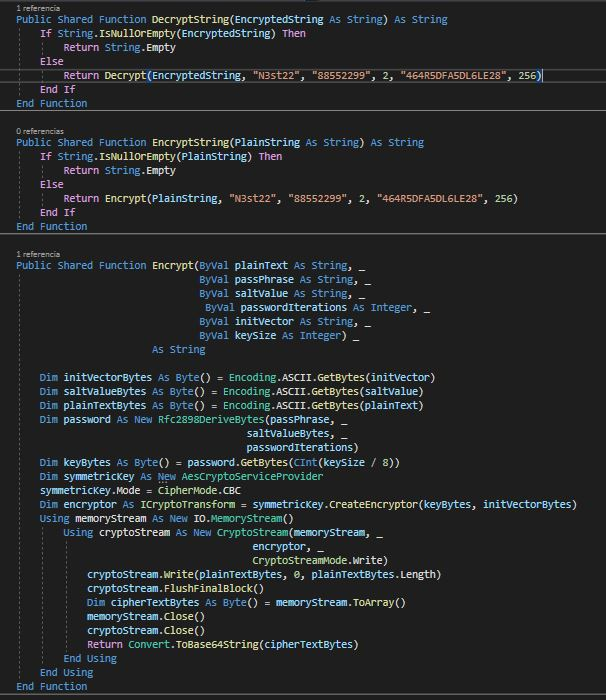
Modificamos el código para agregar un Console.writeLine de la password y realizamos una depuración paso a paso del proceso.
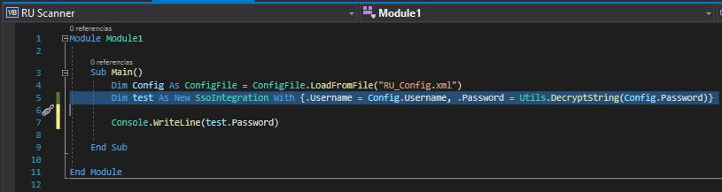
Y es de esta manera que nos encontramos con la password del usuario C.Smith. Imprimiendo test.password.
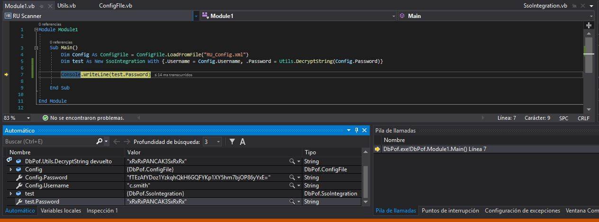
Otra forma de poder visualizar la password es guardar el proyecto con la línea que le agregamos y correr el DbPof.exe desde el símbolo del sistema
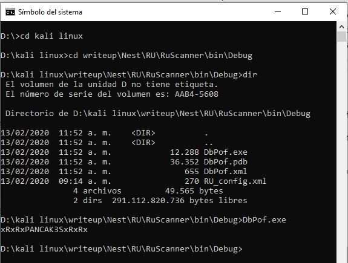
ahora solo nos queda iniciar con las credenciales de C.Smith encontradas en el directorio Users.
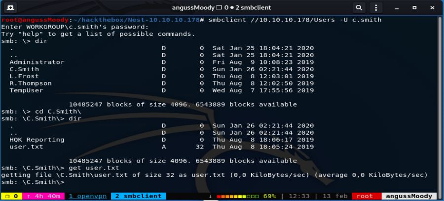
de esta manera obtenemos nuestra primer flag.
• Escalada de Privilegios:
Vamos a realizar una enumeración con las credenciales que tenemos en este momento y nos encontramos con un archivo llamado HQK_Config_Backup.xml
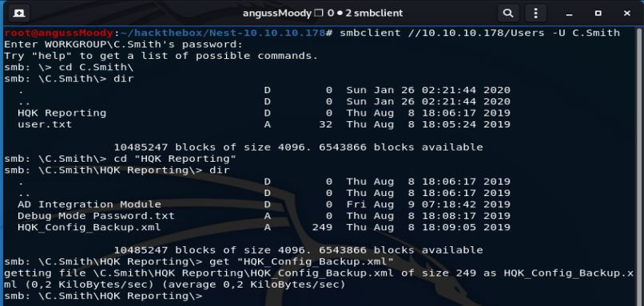
Que nos da un indicio del puerto 4386 que vimos en el escaneo.
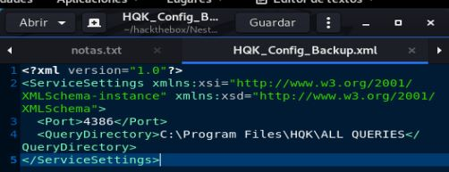
También nos encontramos con binario llamado HqKLdap.exe y vemos un archivo llamado Debug Mode Password.txt, que al descargarlo no nos muestra nada y nos dice que el peso es 0 bytes, leyendo un poco en el foro nos dice que no está vacío como muestra en ese momento.
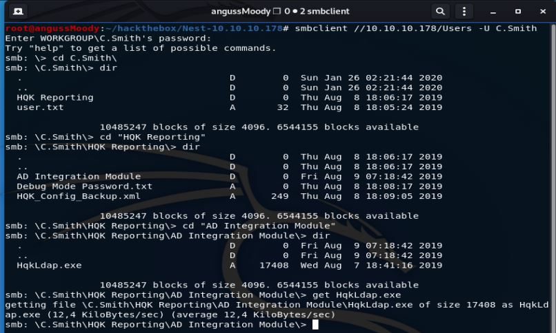
Así que damos un help, para saber que comandos podemos ejecutar y nos encontramos con el comando allinfo, vamos a ver que nos dice este archivo con este comando.
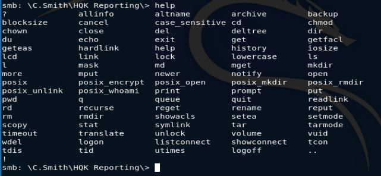
Nos dice que al parecer almacena una password y que en realidad el peso es de 15 bytes, vamos a descargarlo con estos parámetros.
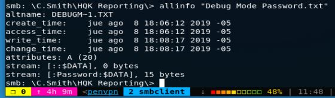
Descargamos el archivo y le anexamos :password:$DATA y este nos da lo que al parecer es una password, ahora en este punto, tenemos un password y un puerto
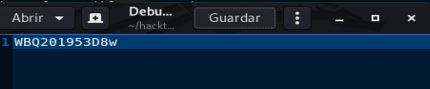
Vamos a ver qué servicio podemos encontrar en ese puerto, tratamos de conectarnos por medio de netcat y nos da una respuesta de HQK Reporting Service V1.2 pero no logramos conexión.
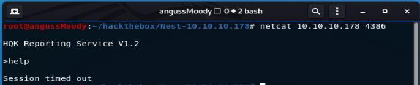
Pero cuando tratamos de conectarnos con telnet obtenemos respuesta y establecemos una conexión, ahora debemos enumerar, para saber si encontramos algo más de lo tenemos hasta el momento.
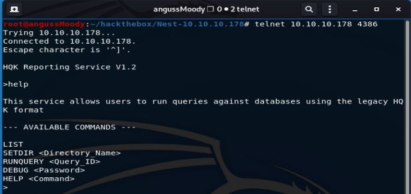
Dándole el comando help nos da los comandos y nos dice que con DEBUG y una password podremos tener una sesión, así que hacemos esto con el password encontrado anteriormente.
Y de esta manera ya tenemos una sesión, así que vamos a enumerar la máquina para ver que podemos encontrar.
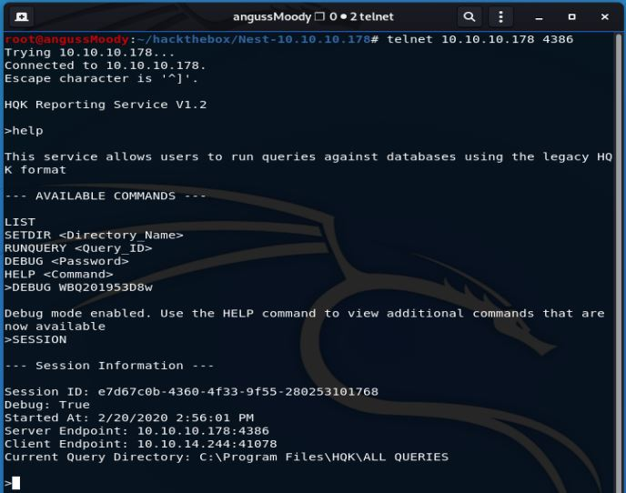
Como vemos en la sesión nos encontramos en ALL QUERIES así que con SETDIR .. nos vamos al directorio de HQK pare ver que podemos encontrar.
Enumerando este directorio vemos que el archivo HQK_Config.xml nos da la password que ya habíamos encontrado y vemos un directorio llamado LDAP, vamos a ver que nos encontramos en este directorio.
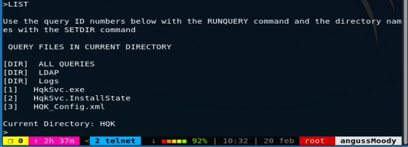
Nos encontramos con el binario que ya nos descargamos y con un archivo llamado Ldap.conf y vamos a ver de qué trata este archivo.
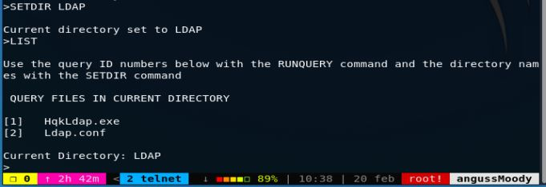
En este archivo al parecer se encuentra la password cifrada como vimos con el usuario C.Smith, pero en este caso la password de Administrator, vamos a copiarnos este archivo a ver si podemos descifrar esta password.
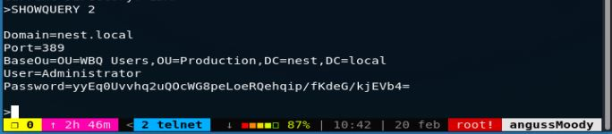
Nos pasamos este archivo y el binario a nuestra máquina de Windows para ver que podemos encontrar en ellos, al tratar de correrlos por CMD, no manda un error, así que investigando un poco nos encontramos con muy buena herramienta llamada DnSpy vamos a depurar el binario para ver con que nos encontramos, montamos nuestro binario y le damos iniciar a ver si nos da algún error.
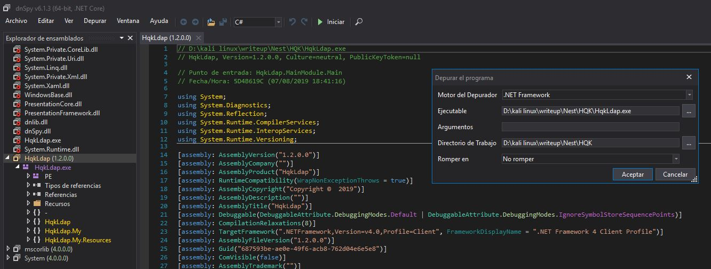
Al iniciar la depuración paso a paso nos encontramos con una línea que nos llama la atención donde menciona que debe existir un archivo llamado HqkDbImport.exe el cual no vimos en la enumeración de la máquina.
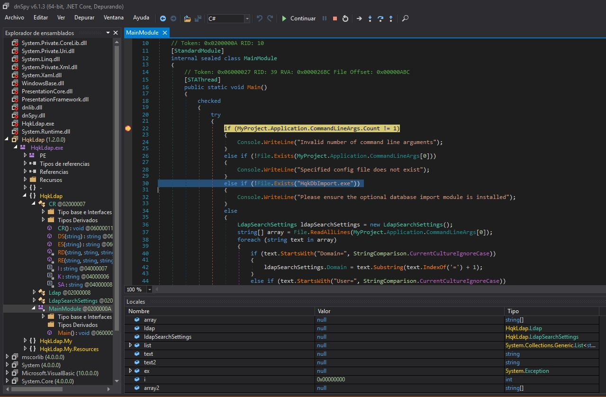
Nos creamos un archivo bajo este nombre e intentamos depurar el archivo de nuevo, ya con esto vemos que la depuración tiene los procesos completos.
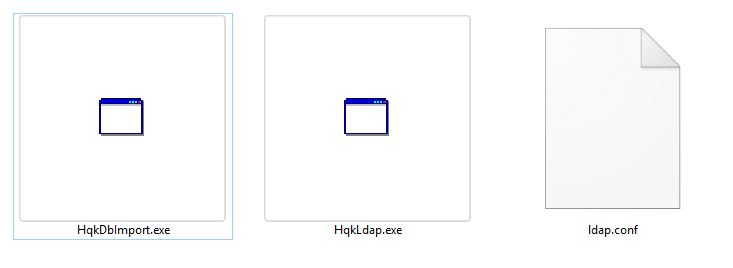
Modificamos el código para agregar un Console.writeLine de la password y realizamos una depuración paso a paso del proceso.
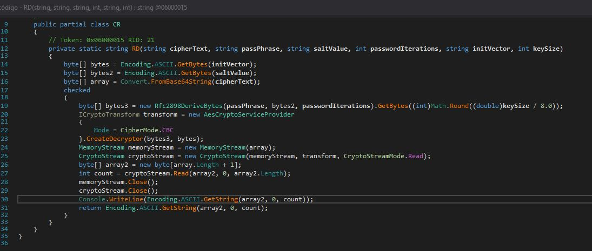
Esto nos trae una ventana emergente donde vamos a copiar en el campo de argumentos el ldap.conf y en romper en le damos punto de entrada y aceptar.
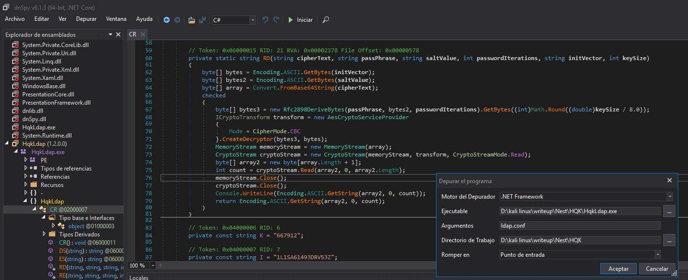
Si vamos corriendo el binario paso a paso vemos que nos muestra las variables Username y Password, así que seguimos avanzando con el paso a paso para ver si en algún momento nos enseña la Password que necesitamos capturar.
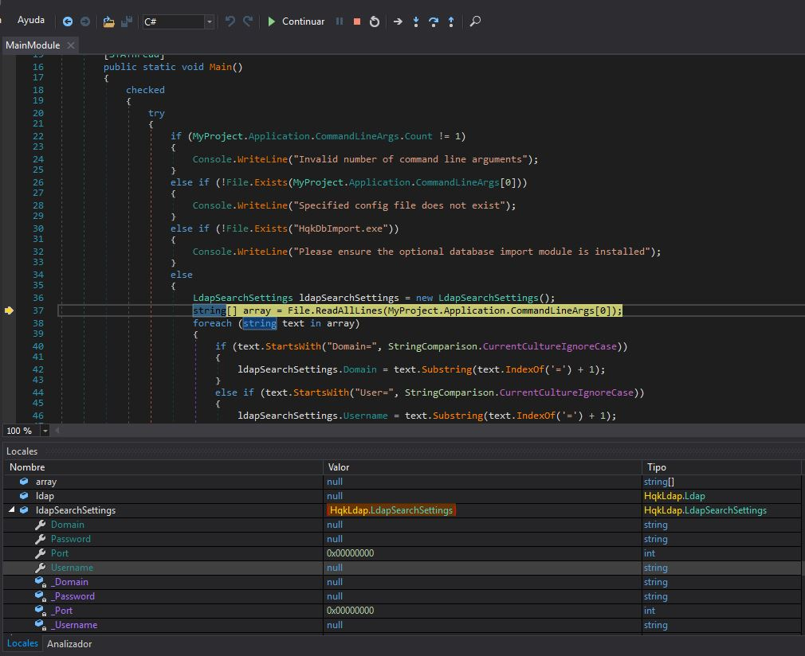
Llegamos a un punto donde nos da el resultado de las variables, Domain, Username y Password. Ya en este punto contamos con el usuario Administrator y con la password. Así que vamos a intentar autenticarnos con esta credencial.
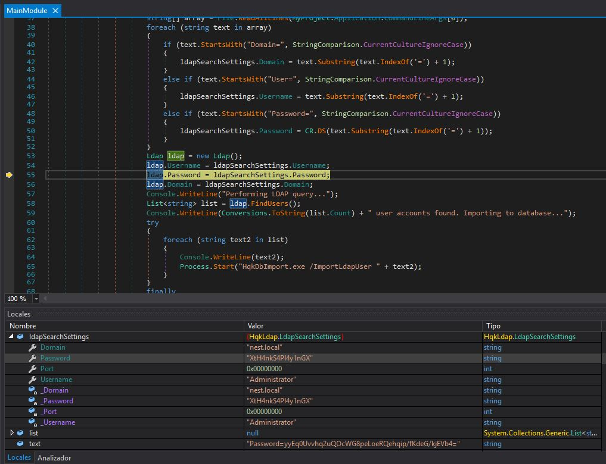
Otra forma de ver la password es, por medio de CMD, le damos en guardar todos, para que nos tome el cambio del Console.WriteLine y corremos el binario junto con el archivo ldap.conf y este nos dará la password del usuario Administrator
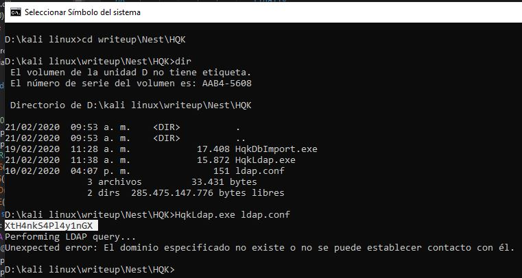
vamos a nuestra máquina atacante e iniciamos sesión con las credenciales de Administrator en el directorio C y nos dirigimos a la ruta del escritorio de nuestro usuario, donde encontramos el archivo root.txt
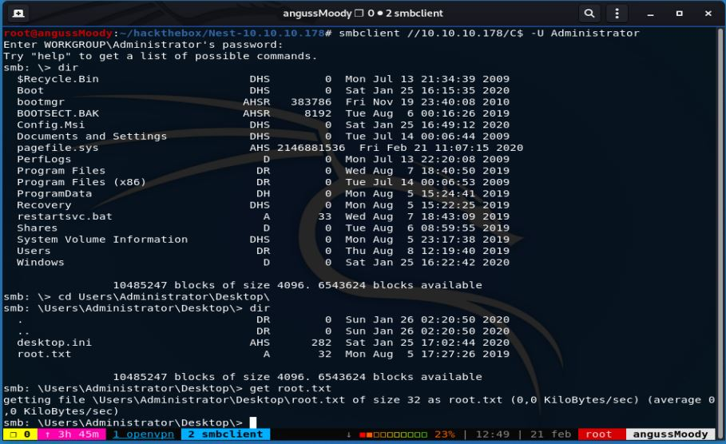
De esta manera encontramos la flag del Root.
Saludos Fr13ndS HTB